1. Sign in
- Open the nursery app and wait for Welcome back.
- Under Demo access, press your role. The email and password fill in for you.
- Press Sign in.
- When you finish, press Logout at the top right.
These four accounts are for this nursery system. Change them before a public server.
| Role | Name on screen | Password | |
|---|---|---|---|
| Admin | Samim Molla | admin@sabanursery.com | Admin@12345 |
| Manager | Nursery Manager | manager@sabanursery.com | Manager@123 |
| Staff | Field Horticulturist | staff@sabanursery.com | Staff@123 |
| Cashier | Counter Cashier | cashier@sabanursery.com | Cashier@123 |
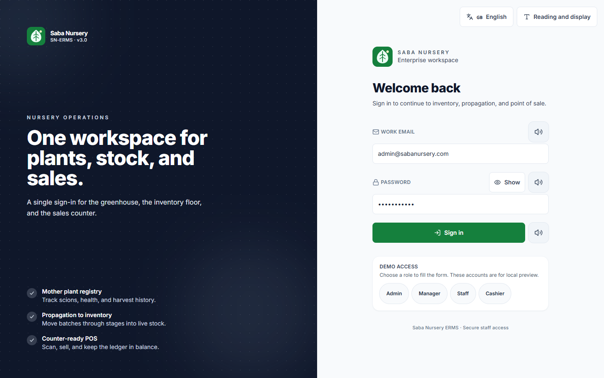
2. Language, text size, and voice
These controls sit at the top of every page, including the sign-in screen.
- Language switches labels. Plant names, SKU codes, and amounts stay as they were entered.
- Text size: Normal, Large, or Extra large.
- Appearance: Light, High contrast, or Eye care.
- Voice assist: when the box is ticked, pointing at a control reads it aloud. The speaker button next to a field reads that field on demand.
Spoken English works with the voices already on Windows. Spoken Bangla needs a Bangla voice installed on that computer.
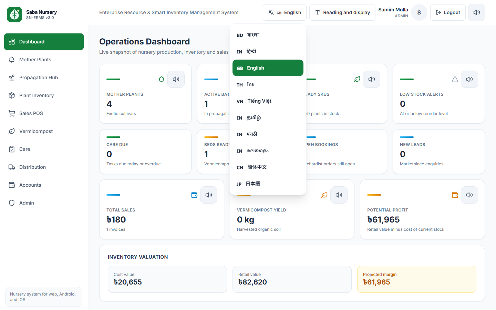
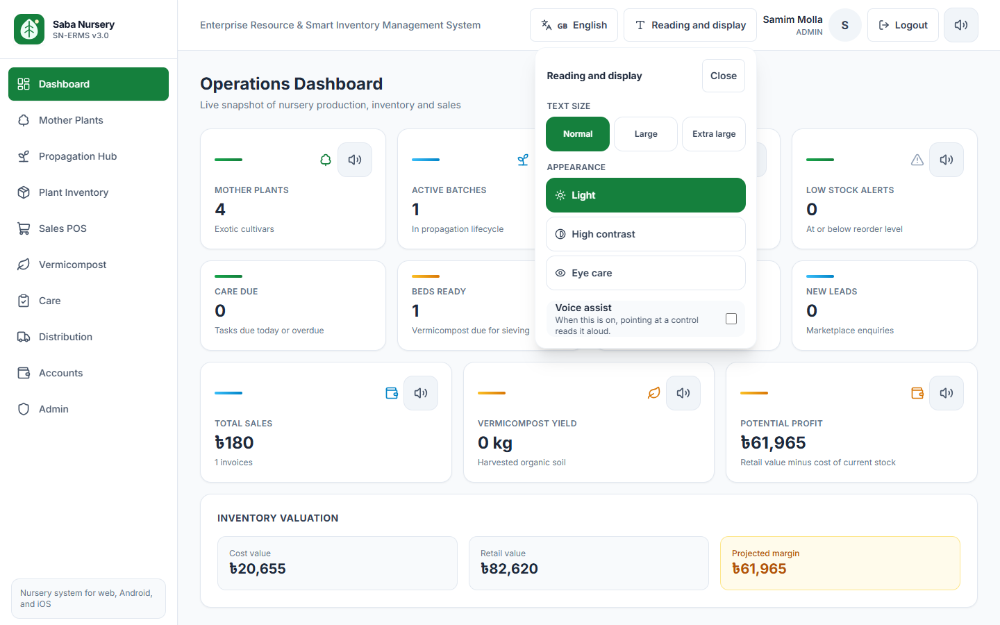
3. Who can do what
The left menu changes with the person who signed in. A hidden page cannot be opened by typing the address; the app sends that person back to the dashboard.
| Work | Admin | Manager | Staff | Cashier |
|---|---|---|---|---|
| See mother plants, batches, stock, compost, care | Yes | Yes | Yes | Yes |
| Register a mother plant | Yes | Yes | No | No |
| Log scions, flowering, and fruiting | Yes | Yes | Yes | No |
| Start a batch and log mist climate | Yes | Yes | Yes | No |
| Mark a batch ready and create stock | Yes | Yes | No | No |
| Adjust stock counts | Yes | Yes | Yes | No |
| Sell at the counter | Yes | Yes | No | Yes |
| Bookings, transport, marketplace leads | Yes | Yes | No | Yes |
| Record expenses and see profit | Yes | Yes | No | No |
| Create users and read the audit log | Yes | No | No | No |
4. Dashboard
Admin sees production and money together. In this nursery the board currently shows 4 mother plants, 1 batch still on the books, 1 ready SKU with 459 plants, 1 bed ready to sieve, and sales of ৳180.
- Potential profit is the retail price of plants still in stock, minus what they cost. It is not the cash already collected.
- Inventory valuation splits that into cost value, retail value, and projected margin.
- Care due counts tasks scheduled for today or earlier that are not marked done.
- Open bookings counts orchard orders that are still pending or confirmed.
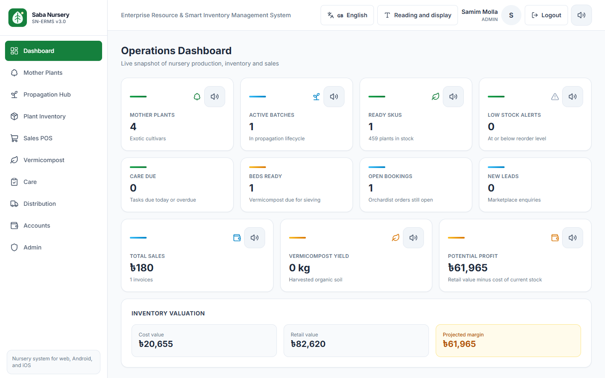
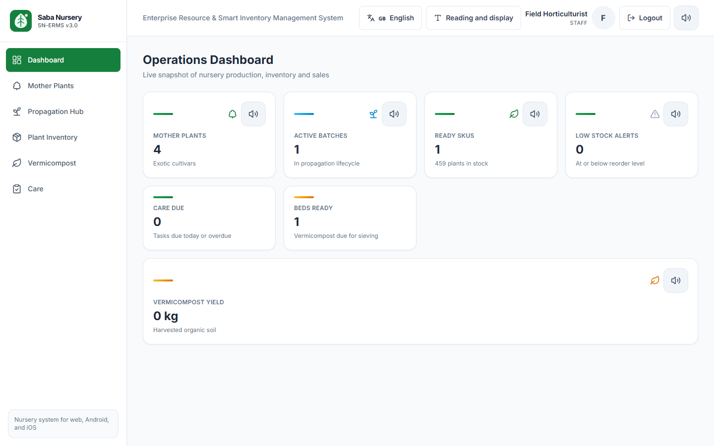
5. Mother plants
Register a tree
Admin or Manager presses Add Mother Plant, then fills tag number, variety, source country, planting date, and plot. Save & Generate Tag stores the tree.
Day-to-day buttons on each row
- Metal tag opens a printable tag with a QR code. Anyone who can open this page can print it.
- Cycle records flowering or fruiting, with the date and a note.
- Log scion records how many stems were cut from that tree.
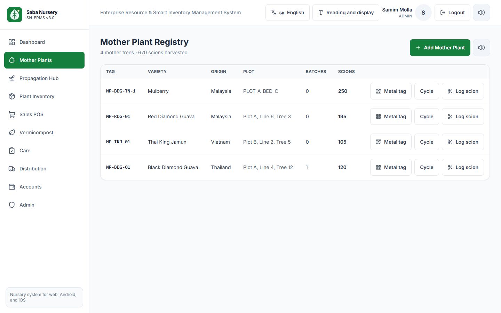
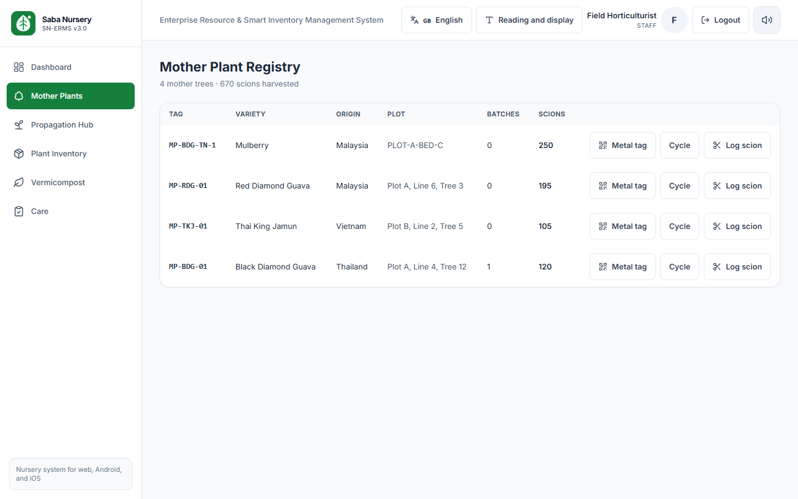
6. Propagation
- Press New Batch. Choose the mother plant, the method, and how many plants you started.
- Methods are air layering, softwood grafting, cleft grafting, patch budding, cutting, and seedling.
- Move the batch from Mist chamber to Hardening as the plants grow. Enter how many plants are still alive.
- On Climate, log temperature (°C) and humidity (%) for the mist chamber. The useful band is about 20–35°C and 70–95% humidity.
- When the plants are hardened, a manager presses Mark Ready, fills the selling name, bag size, and prices, then presses Create Stock & QR.
The batch already in the system, BATCH-2026-BDG-001, is ready for sale, so the row only offers Climate.
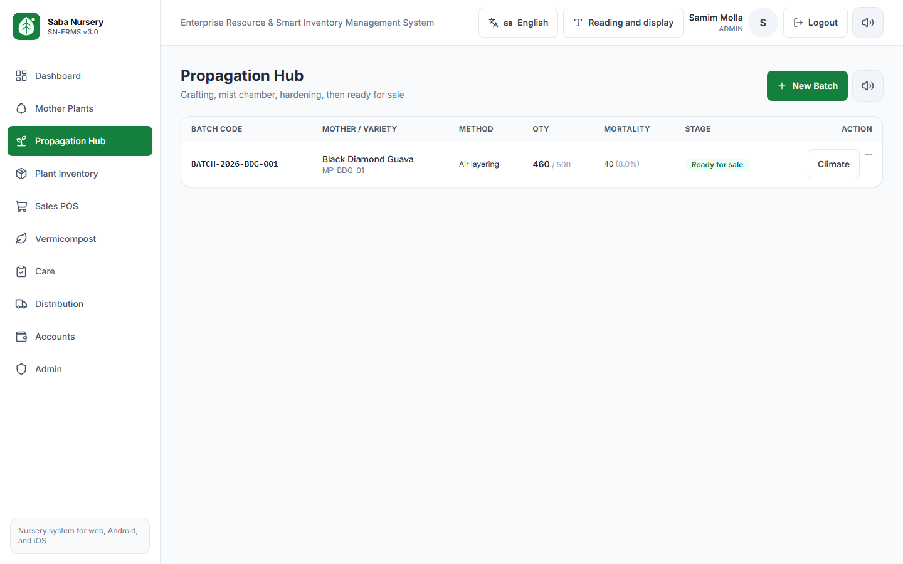
7. Plant inventory
Each row shows bag size, stock, retail price, and wholesale price. Adjust stock with one of three reasons:
- Mortality — plants died. Use a negative number.
- Count adjustment — the physical count did not match the screen.
- Purchase — plants bought in. Use a positive number.
Staff, Manager, and Admin can adjust. Cashier can look up a plant and print a label, and cannot change the count.
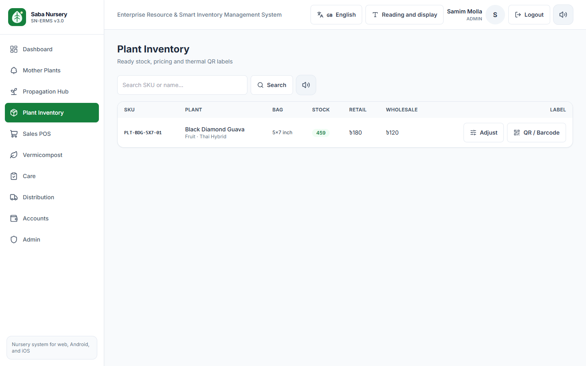
8. Sales counter
- Open Sales POS.
- Scan the plant tag, or type the SKU and press Add. Press F2 any time to jump back to the scan box.
- Set the quantity. Press the red remove mark to take a line off the cart.
- Choose the channel: Retail Counter, Wholesale Orchardist, IndiaMART, or Meesho.
- Type the customer name. Phone is optional.
- Choose Cash, UPI (PhonePe/GPay), or Bank NEFT/IMPS.
- Check the net total, then press Complete Sale & Print.
On Wholesale Orchardist, the discount is automatic: 10% from 100 plants in the cart, 20% from 500 plants. Retail has no quantity discount.
UPI shows a QR for the net amount. The nursery VPA on that code is sabanursery@upi. The cart in the admin picture below was only for the screenshot. The sale was not completed, so stock stayed at 459.
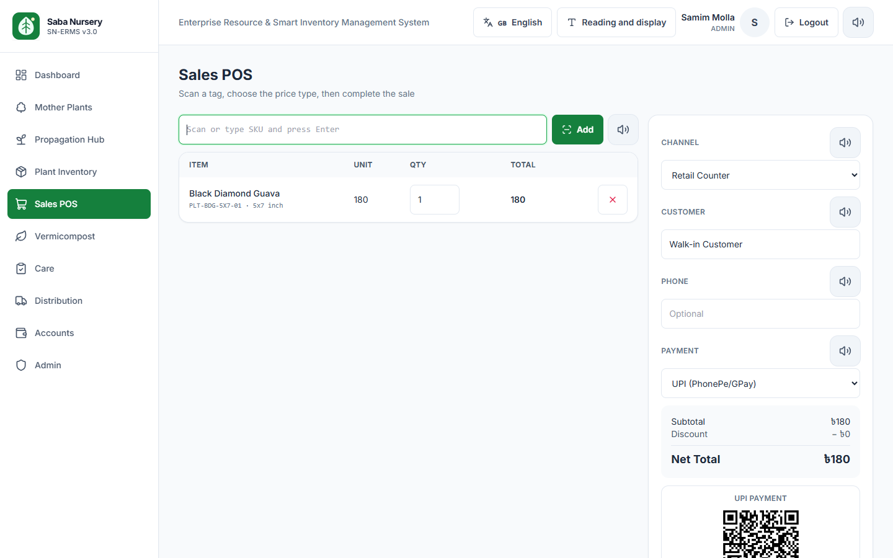
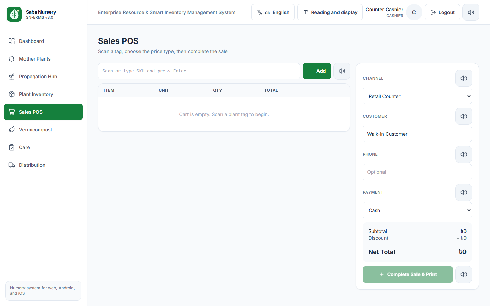
9. Vermicompost
Bed V-BED-01 is past its expected date, so the dashboard counts it under beds ready. Harvest stores a cost per kilogram from the inputs: cow dung at ৳2 per kg and biomass at ৳1 per kg.
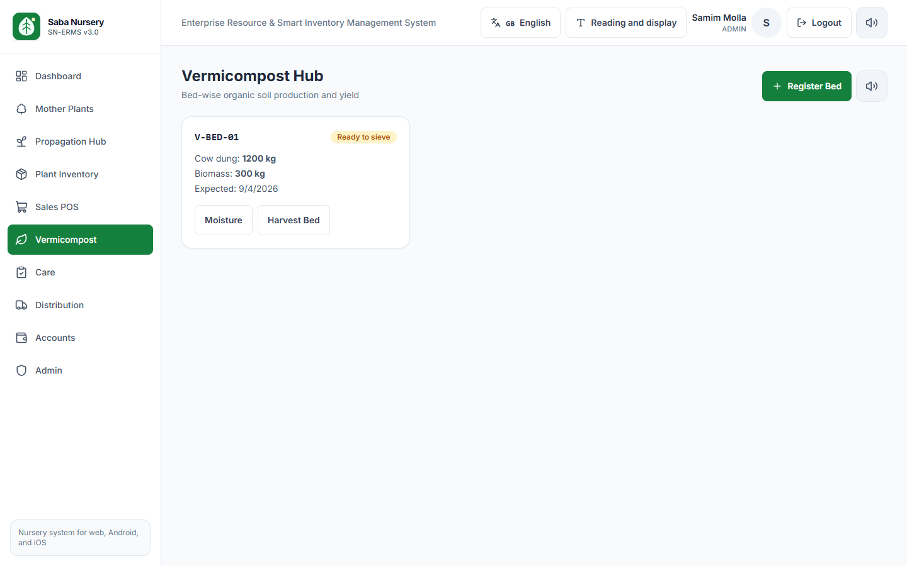
10. Care
Task types: Watering, Nutrient spray, Fungicide, Insecticide, Pruning.
Frequency: Once, Daily, Weekly, Every two weeks.
Cashier can open this page. Adding and completing tasks is for Staff, Manager, and Admin.
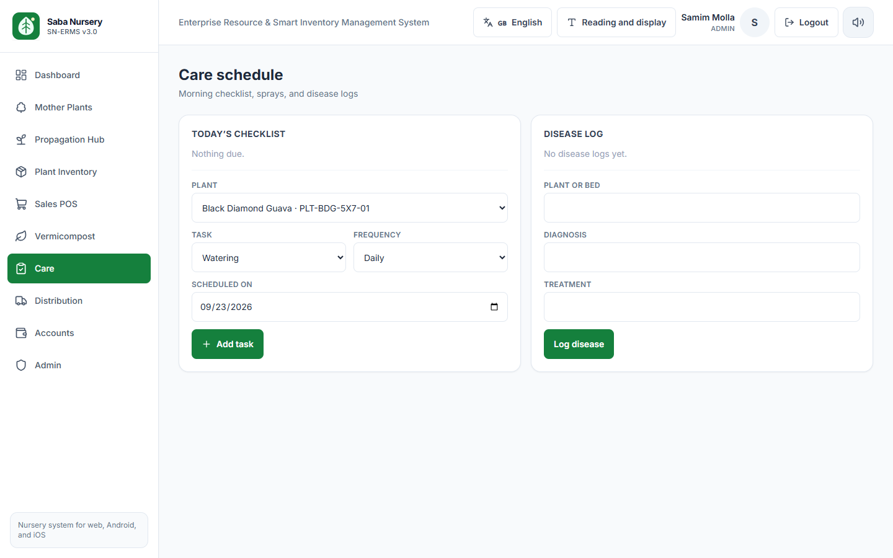
11. Distribution
Booking
Type the customer, variety, and quantity, then Save booking. Status moves from Pending to Confirmed, Fulfilled, or Cancelled. A sample booking for Orchard Demo, 100 Black Diamond Guava, is still pending.
Transport
Type destination, what is on the vehicle, and the vehicle, then Save manifest. Status moves from Draft to Dispatched to Delivered. The manifest number is given by the system.
Lead
Pick IndiaMART, Meesho, or Amazon, type the contact and what they want, then Save lead. Status moves from New to Contacted, Converted, or Closed.
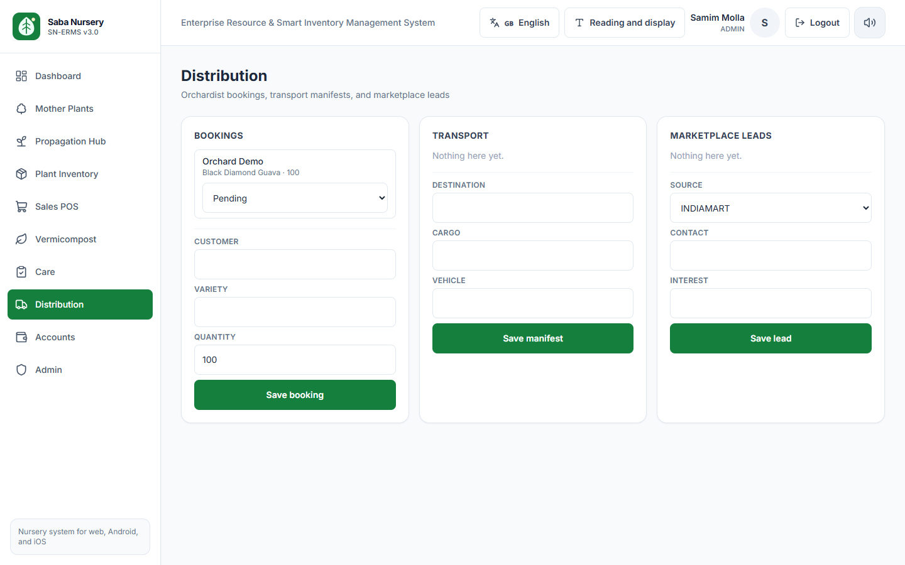
12. Accounts
Gross profit is revenue minus the cost of plants sold minus nursery expenses. On this screen that is ৳180 − ৳45 − ৳1 = ৳134 (74.44%). The ৳1 line is a fertilizer note named “demo” from testing. The amount box on the left is the form for the next expense; it does not change the totals until you press Save.
This profit is the money already earned on sales. The dashboard “potential profit” is the money still sitting in unsold stock. They are different numbers on purpose.
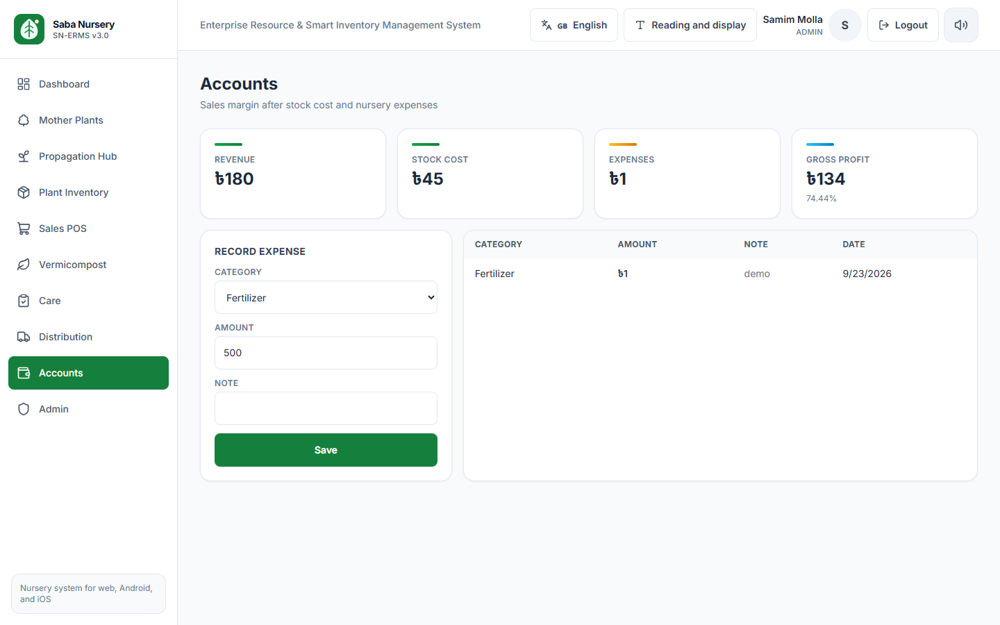
13. Admin
Roles you can assign: Admin, Manager, Staff, Cashier. The audit list does not include passwords.
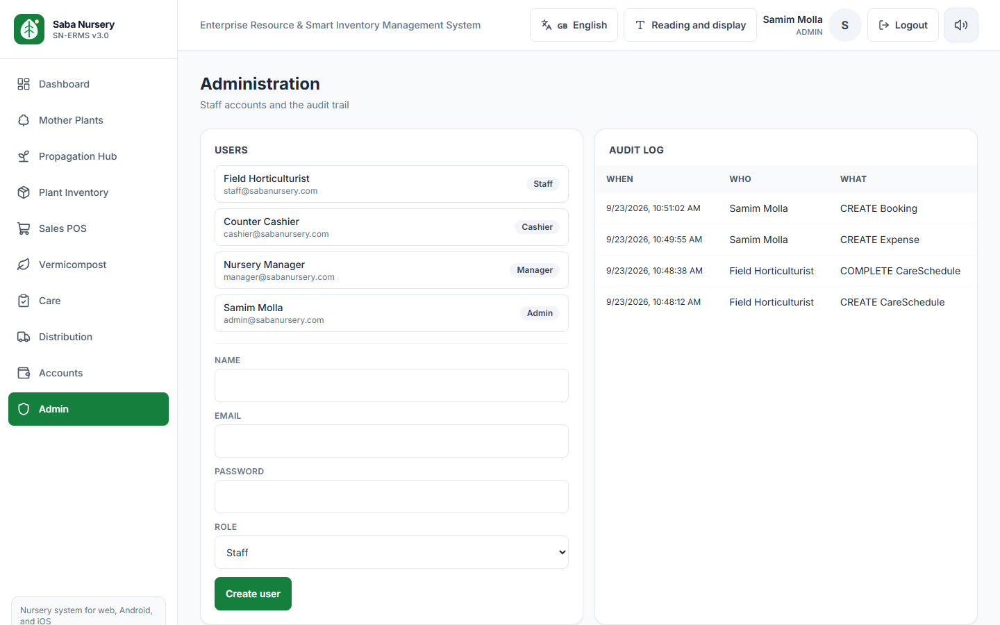
14. A working day
Staff — Field Horticulturist
- Sign in as Staff.
- Open Care. Finish today’s checklist with Done. Add tomorrow’s spray or watering if it is not already repeating.
- Log any disease, then mark it resolved when the plant recovers.
- On Mother Plants, log scions you cut and any flowering or fruiting.
- On Propagation Hub, move batches forward and log mist temperature and humidity.
- On Plant Inventory, adjust the count if plants died or the tally was wrong.
- On Vermicompost, log moisture. Harvest a bed when it says ready to sieve.
Cashier — Counter Cashier
- Sign in as Cashier and open Sales POS.
- Scan, take payment, and press Complete Sale & Print.
- For an orchard order or a truck, use Distribution.
- Leave stock counts, new mother plants, and accounts to the floor and the manager.
Manager
- Check the dashboard for low stock, care due, beds ready, open bookings, and profit on unsold plants.
- Register new mother plants. Mark hardened batches ready and create stock.
- Record fertilizer, bags, labour, and electricity under Accounts.
- You do not create user accounts. That stays with Admin.
Admin
- Do any of the jobs above.
- Create a user when someone joins, and pick the role that matches their work.
- Read Admin → Audit log when you need to see who changed a booking, an expense, or a care task.